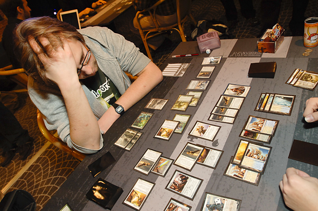

Welcome to the learning section of Magic The Gathering or MTG for short. MTG is an amazing and diverse Trading Card Game, with a complex and very complicated interactions with your cards and other players. On this you will learn the basics and how the game works, with links to other informations on various topics for more in depth explanations and rulings.
Game Function
So you will need a deck of any amount of cards in the deck but no less than 40(depending of the format certain rules and restrisction will apply) consisting of spell cards and land card which is what you will use to cast spells card. After you have made or acquire a deck you find an opponent roll a dice to see who goes first and begin the match. There are five important phases you must learn and follow:
-
Beginning Phase
-
Pre-Combat Phase/Main Phase 1.
-
Combat Phase
-
Post-Combat Main Phase/ Main Phase 2
-
Ending Phase
Board State

Typical look of a game MTG in commander format. Sometimes you just gotta think it through. https://magic.wizards.com/en/articles/archive/event-coverage/quarterfinals-quite-handful-2011-02-13-0